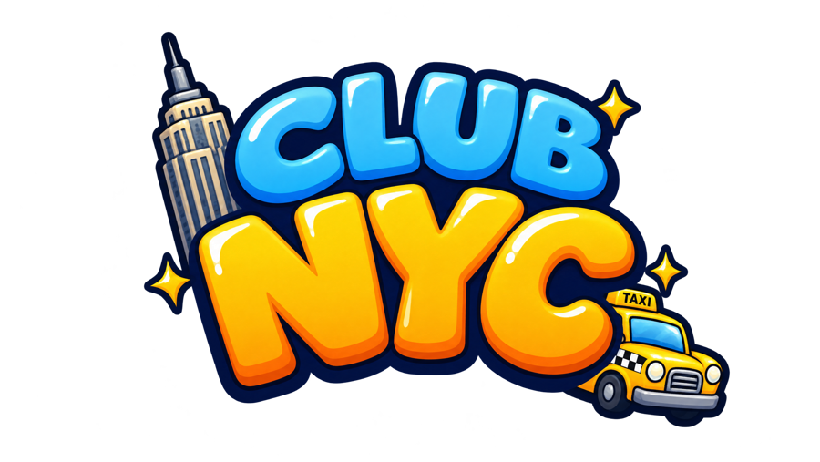

Instagram plan · Thu Oct 29 to Fri Nov 27, 202630 days to a city full of people.
A post a day, mixing full-screen reels, carousels people swipe to learn something, and images made to be shared. Everything is built so people send it to a friend, and the friend lands in the game right next to them. Every video below is real gameplay, cut on our own beat, in Burbank and our colours. Click any day to see what goes up, what it says, and what we measure.
Reach adds. Sends multiply.
Instagram pushes a reel to people who don't follow us mostly on how long they watch and how often they send it in a DM. A send is also the only view that arrives with a friend attached. So every reel is designed to be sent to one person, and the game is designed to pay that person off.
Why it can compound
Reach on its own is a straight line: more reels, more views. It bends upward only when the people who arrive bring more people. Two numbers decide that.
The game, made for a phone.
The game is wide; a phone is tall. So most reels are now full-bleed portrait: footage recorded for it, where the New Yorker walks through the middle third of each room and the crop follows them, so nothing important falls off the edge. “This or that” reels stack two places, one over the other. The older “window” reels stay for testing against them. Each reel loops on our own tune, with a no-music cut for trending sounds.
Swipe to learn something.
Carousels are the format people save, and saves tell Instagram a post is worth showing again. Each one teaches a small, true, slightly ridiculous thing about New York, then ends on the game. Singles are made for one job: a share, a tag or a comment. All are 1080 × 1350, the tallest a feed post can be.
Singles
Four phases, four asks.
Each phase changes what the reel asks for. First a follow, then an invite, then “come tonight”, then “send this to them”.
Stories go up every day as well (polls, Add Yours stickers, behind the scenes, reshared player clips). The calendar shows the main post.
Play with the numbers.
A rough model, not a forecast: move the sliders to see when sends and invites start to matter more than reach. The defaults are cautious guesses for a brand-new account.
New players per week
Double down, or drop it.
What we watch
| Signal | Why | Bar |
|---|---|---|
| Still watching at 3 s | Did the hook stop the scroll? | 60%+ |
| Sends per 1,000 views | The spread. Our main number | Beat our median |
| Average % watched | Loops count, so short wins | 70%+ |
| Follows per 1,000 reached | Did non-followers want more? | Beat our median |
| Join clicks, then sign-ups | Each reel's own link | Weekly |
| Friends per new player | Invites accepted, in game | Above 1 by week 4 |
The rules
- Any reel at twice our median sends gets two new versions that week: a new hook, then a new place or job in the same format.
- Every new hook runs first as a Trial Reel (shown to non-followers only). The winner goes to the grid.
- Under median twice in a row: retired. No feelings about it.
- The best comment of the week becomes next week's reel, and we reply to it with the video.
- Numbers come from Instagram and our own join funnel. We never round up, and never post a player count we can't show.
Straight from the brand book.
The reels use the same design system as the game (Figma, page “Brand Book”), so a stranger can recognise one with the sound off.
Look
- Burbank only. Bold for hooks and plates, Medium for small print. Mock-epic trailers too: capitals, wide tracking, still Burbank.
- Hooks in white with an ink outline, one keyword in Taxi Yellow. Seven words or fewer, word by word.
- The game sits in a window with a paper border and an ink shadow. Place names go on a blue plate under it, like in the game.
- Hook in the top third. The bottom fifth and right edge belong to Instagram's buttons.
- End card: logo on Club Blue, the line on a Taxi Yellow button. Then it loops to frame one.
Sound and timing
100 BPM: one beat is 0.6 s (18 frames). A reel is 16 beats. Ink = a cut, yellow = the end card.
- Master: Sidewalk Shuffle, our own tune, so it's always safe to post.
- “No music” cut: sound effects only, for a trending sound added in the app. Licensed songs never go in our files.
- New reel = new entry in
video/src/reels.ts, thenmusic.py --reel=<id>andrender -- --only=reels. A week renders in one go.
Lines we don't cross
- No “Club Penguin” in on-screen text or the account name. In a caption only, with “not affiliated with Disney or Club Penguin”.
- Real gameplay only. City locals are never called players, and player counts are real or absent.
- Real store names stay out of reels until the trademark review. No I ♥ NY sign in shots.
- No fake scarcity and no countdowns to nothing. The only deadlines are real event times.
- No em dashes on screen or in captions, and the joke comes after the useful part. Creators tag #ad.
Club NYC · Instagram plan v1 · written Oct 28, 2026. Videos load from video/out/reels and app/public/video on this machine.